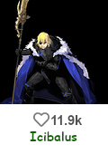
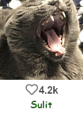
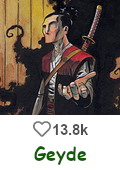
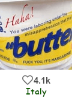
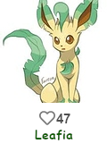
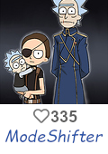

Notes:
- All factions in this post have the win condition “Eliminate all opposing factions and any neutrals who seek to do you harm.”
- All roles which reference ITAs automatically enable ITAs starting D2.
- All roles with reference events automatically enable events starting D1, with events determined by host discretion.
- Mod elections occur when half or fewer of the players remain at the start or end of the day.
1017

FrostWolf
Town Roleblocker [Offensive]
Wolf Guard (Day)-Your night ability tonight will also prevent the target from dying during the night. However the next night you will be unable to use your night ability-2 uses
Ice Cage (Night)-Roleblock target person-Infinite Uses
1018

Nerbins
Town blamed for everything dreaming god [Special]
Blame Nerbins (Passive) - Blame him for this passive as well, since if he wasn’t blamed so much, you wouldn’t have it. You will appear as mafia to all checks.
Setup theme (Night) - Chose name of one game which was hosted on this site. At the end of the night you will receive a one shot day ability that is themed after this game… theme.
1019
Chloe
Town not forum mod, who does mod work regardless [Social]
Processing appeals (Passive) - You can talk to banned people at night.
Unban (Night) - eevee has banned someone without good reasoning again. Unban them, making them rejoin the game. - 1 use
Make friends (Day) - Target person in the User Union, making them join the Judge Alliance instead.
Mod candidate (Passive) - If you are elected as new mod, you will get ability to ban people, as well as refill on “urban”.
1020

Napoleon
Town Imperial Physician [Support]
Imperial Guard  (Night)- Each night you may target someone preventing them from dying that night. You cannot target the same person twice in a row (Infinite uses)
(Night)- Each night you may target someone preventing them from dying that night. You cannot target the same person twice in a row (Infinite uses)
1021

Icibalus
Town Cthulhu’s mortal enemy [Killer]
Almost Polish (Passive) - Do to your undoubtedly legitimate connections to Poland, you are bound to do slightly better in some events… possibly.
Summon Exodia the Forbidden One (Day) - Summon an NPC, which can ITA shot. You can order them from your rolecard and they stay alive till killed. (They are slightly easier to be killed by ITAs)
1022

Moleland
Town “Pokèmon” [Social]
Apparently a Pokèmon (Passive): Though you appear to be an ordinary mole, you are actually a Pokèmon.
Dig (Night): Target a player. If they are a Pokèmon, you and that player will both be added to the Pokèmon neighborhood.
Earthquake (Night): Target a player in the Pokèmon neighborhood. You will know if they visited anyone or were visited by anyone (you will not know which happened) (1 use)
1023

Techwolves
Town Soul Collector [Support]
Consume Soul (Passive): -You start off with zero souls. If you were to ever die, due to anything other then the lynch, you will survive by consuming a soul.
Gather Soul (Night): Each night you may visit someone, collecting their soul if they would die (Infinite uses)
1024

ClonedCheese
Town Roboticist [Special]
Build Robot (Day): Build a chosen robot during the day. You must build each robot once before building any robot again.
Your choices are Infinite Recharge, Destination: Deep Space, and Power Up (Infinite uses)
Drive Robot (Night): Drive the robot you have created. This will have a different effect depending on which robot you drive (Infinite uses)
Infinite Recharge: Tomorrow night, target player will be able to use their action twice, while only consuming a single use if they use a limited use ability. Fails if used on a moderator candidate. You will be seen as performing the second ability.
Destination: Deep Space: Redirect your first target to your second target.
Power Up: All actions by members of the town on target player will silently fail tonight.
1025

DatBird [Killer]
Town not forum mod, who does mod work regardless
Blacklist (Night) - Target chosen person and ban them. - 3 shot
Make friends (Day) - Target person in the Judge Alliance, making them join the User Alliance instead.
Mod candidate (Passive) - If you are elected as new mod, you will get ability to unban people, as well as refill on “blacklist”.
1026

Sulit
Town evolving “Firekitten made this rolecard and forgot to add the typing” [Support]
Shy Noises (Night) - Each night you can target a person to hide behind them.
This will prevent all visits to you for that night, however everyone targeting your target will also target you.
If this ability prevents a death on you, you will lose this ability and unlock a new one.
1027

Geyde
Town claiming is bad, don’t do it in home. [Killer]
Annalyzing data (Passive) - Each night you may gain data to analyze.
"You can solve this by adding in anticlaim mechanics, like claimvig, in order to create a more healthy experience" (Night) - Guess the targets flavor. If you are correct you will kill them.
1028

Vulgard
Town adorable “This votecount is scummy” [Investigative]
Bounce (Passive) - Since you are so adorable, no one wants to insult you. ITAs targeting you will have their chance to hit reduced by 10 percent.
Write wallpost (Night) - Target a player. They will be immune to occupation and redirection tonight (usable only on odd nights)
Vote Count Analysis (Night): Target a player. Learn whether they have any abilities that affect voting (usable only on even nights)
1029
Simon
Town mechanics nerd [Investigative]
Setup Solving (Passive) - Due to your habit of solving setups, each night you will receive mechanical information about the setup.
Gathering Data (Night) - Each night you may target two people, comparing theirs amount of likes. You won’t receive results, as they will be sent to other person.
1030

CRichard564
Town conditional doublevoter [Social]
“See if you’re going to read me as scum, that’s up to you. Perhaps I need to remind everyone that every game I’ve had so far I’ve been town. So you have no knowledge how I behave as a wolf to base your scum reads on me on.”
OMGUS (Passive) - Your vote will silently count as two votes if the player you are voting is also voting you. This is disabled when five or fewer players remain.
1031

Italy
Town not-paranoid gun owner [Killer]
Gun (Passive): Like always, you have a gun. Unfortunately, everyone else also has a gun.
However, after some of your previous shots, your friends have staged an intervention and modified it. Each time you kill a member of the Mafia in ITAs, you gain an additional ITA shot for that day. This shot is submitted in your rolecard. Furthermore, whenever you kill a member of the Mafia, your ITA hit rate increases by 5 percent permanently.
1032

Apprentice
Town Quiet Mechanics Oracle [Investigative]
Information on the Clocktower (Passive): Your experience with Blood on the Clocktower has taught you about mechanical deduction. At the end of each night, you will receive a piece of mechanical information about the set-up.
Does this game have whispers? (Day): Send a message of 100 characters or less to a player above or below you on the player list.
Mechanically solve (Night): Submit a word of your choice to the host. Information gained from your passive tonight will be guaranteed to relate to the topic you submit (1 use)
1033
oB_L1ght
Town Masonizer [Social]
Create “Hydra” (Night) - Target a player, checking if they are a member of the informed minority. If they are, you will die, bypassing all protections. If they are not, you will create the chat with them. (1 use)
1034

Centuries
Town ““Doctor”” [Support]
Play Offsite (Night) - Each night you may target someone, preventing them from dying the next day (besides the lynch). You cannot target the same person twice in a row.
1035

Hippoyeetus
Town idrc what’s going on, but it’s funny [Killer]
Roasted (Passive) - You may fire an additional, silent ita shot (does not reveal shooter).
The public shot however will always be an automatic miss.
You may target anyone with this silent shot, regardless of other restrictions.
Epic comeback (Passive) - You always have like advantage in ITAs, regardless of who you shoot / who shoots you.
Elections? What elections? (Day) - Switch the faction you belong to (User Union / Judge Alliance).
1036
Alice
Town association cop [Investigative]
Associative Reads (Day) - Target a banned person to compare their alignment with your night ability target. You cannot target the same banned person more then once.
Process Of Elimination (Night) - Target a person to compare their alignment with the person you last used your day ability on.
1037

PokemonKidRyan
Town Pokemon Trainer [Social]
Youngster Joey (Passive): You register as a Pokèmon to all abilities.
Pokèball (Night): Target a player. If they are a Pokèmon, you and that player will both be added to the Pokèmon neighborhood.
PKR and Wolfy (Night): If you are in the Pokèmon neighborhood, you may spend the night with your boyfriend, causing all actions performed on you by other members of the Pokèmon neighborhood to fail (1 use)
1038

Leafia
Town Pokemon [Social]
Leafeon (Passive): You are a Pokèmon.
Leaf Guard (Night): Target a player. If they are a Pokèmon, you and that player will both be added to the Pokèmon neighborhood. (Infinite uses)
Magical Leaf (Night): If you are in the Pokèmon neighborhood, roleblock a player in the neighborhood (1 use)
1039

Ami
Town desperadic shakespeare [Killer]
Where Art Thou, O Romeo (Day) - Target a player, checking if they are a member of the informed minority. If they are, you will automatically ban them. Otherwise, you will commit suicide, bypassing all protections (this also counts as ban) (2 uses)
1040
Katze
Mafia Unkillable Feline [Support]
9 Lives (Passive) - You will survive the first 8 attacks on you (besides being lynched). ITAs will be seen as misses, even if they hit as long as you have a life left.
Weebs out reeee (Day) - Chose one player from User Union and one from Judge Alliance. Swap theirs allegiance.
Pet me now, mortal (Night) - Redirect all attacks from targeted player to yourself for a cycle. It will not be noted that ITAs were redirected to you (Will show up as attacks on originally intended target).
Mod candidate (Passive) - If both DatBird and Chloe roles are dead when mod elections happen, you will get abilities to blacklits and appeal.
1041
Marshal
Mafia Weird Fuckery [Special]
Villagery hat (Passive) - You appear as town to investigative.
S o u l r e a d (Passive) - You share neighborhood with owner of SirDerpsALot rolecard.
No Life (Day) - Spend all your time on the forum, making you immune to occupation tonight. - 1 use
Haha, reaction test (Night) - Chose a player. Watch a player over them on playerlist, track the player below them on playerlist, check the flavor of last banned person, send a short haiku to be posted by host at the day start, occupy yourself and your target on the next night.
1042

SirDerpsALot
Mafia more and more annoyed JOAT [Special]
S o u l r e a d (Passive) - You are in a neighborhood with owner of Marshal rolecard.
Bussing (Passive) - The powers of your fallen allies empower you. Your abilities become stronger the more members of the Mafia have died.
Gutread (Night) - Target a player. You will rolecop them. (2 uses, usable only when at least one member of the Mafia is dead)
Tunnel (Day) - Gladiate a player. Only usable if at least six hours remain in the day (1 use, usable only when at least two members of the Mafia are dead)
Forget Night Action (Night) - Target a player. They will be occupied for the night and their ITA hitrate tomorrow will silently be reduced to zero (2 uses, usable only when at least three members of the Mafia are dead)
Hero Shot (Day) - Dayvig a player, bypassing protections. (1 use, usable only when at least four members of the Mafia are dead)
1043

MaximusPrime
Mafia “Firekitten made this rolecard and it makes no sense to me, so have eggplant instead  ” [Investigative]
” [Investigative]
Not gonna sleep (Passive) - If anyone visits you they will be pricked. You will know if someone gets pricked (their name), but not where they were pricked.
Spiky DoorKnob (Day) - Place a Spiky Doorknob at someone’s house. Anyone who visits them at any time in the future will get pricked.
Oh, I have a grand idea! (Night) - Choose a player who you targeted with Spiky DoorKnob, you will learn all of the abilities that targeted that person that night - 2 uses
1044

KyoDaz
Mafia Night Arsonist and Day Also Arsonist [Killer]
Planning A Roast (Day) - Plan to insult someone
Roast Feast (Night) - Insult everyone you have planned to, making them leave the community (die).
Flagging Posts (Night) - Flag a persons post
Moderator Call Out (Day) - Call our the moderators, forcing them to ban the people you have flagged
1045

Solic
Mafia Deathtunneler [Support]
“Deepwolf” Killer (Passive): You have a 10% higher chance to ITA someone if they would appear as town to cop checks.
There Can Be Only One (Night): Perform the factional kill tonight, causing the kill to be strongmanned, strong willed, and invisible to trackers/watchers - (2 uses)
1046

an_gorta_pratai
Mafia improvising framer [Social]
I always wing it and do whatever the hell I want
Do what you want (Night) - Do what you want, this does nothing.
I don’t ever have a plan (Day) - Frame someone for a cycle. They will appear as member of the informed minority and visiting the factional kill target. That’s very good effect for no plan anyway.
1047

ModeShifter
Neutral NPC Commander [Killer]
Ban avoidance (Passive) - Due to past experiences you know how to avoid bans, and sure as hell you will not leave this forum. (Death immune, show as miss in ITAs)
That sound… logic (Day) - Summon an NPC, which can vote and ITA shot. You can order them from your rolecard and they stay alive till killed. (They are slightly easier to be killed by ITAs)
The ultimate power (Passive) - If all moderator candidates / moderator die, you will inherit moderator abilities.
Goal: Eliminate everyone. EVERYONE.


{kind=link}